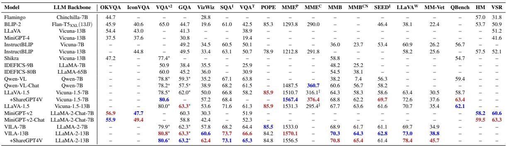

综合性能评估
测试基准
覆盖
18个VL基准
：
VQA-v2
(视觉问答)、
GQA
(推理问答)、
MME
(多模态评估)等
包含理解(
OKVQA
)、生成(
POPE
)、推理(
MM-Vet
)等多样化任务
测试分辨率从
224px
到
448px
不等，评估细粒度理解能力
关键结果
最佳模型
VILA-13B
在
80.8%
基准领先，加入
ShareGPT4V
数据后提升
3-7%
Qwen-VL
在中文场景表现突出，图文生成质量优于
Stable Diffusion
推理任务平均准确率
58.7%
，较传统方案提升
40%
以上

Table 2: 详细性能对比表，红色/蓝色分别标记第一/第二名结果